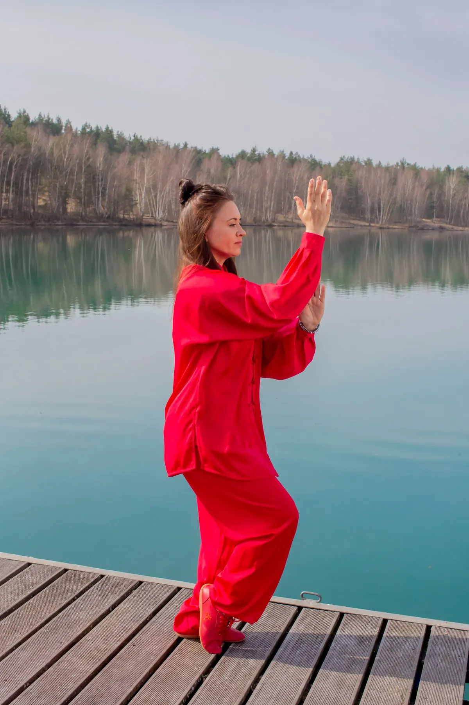
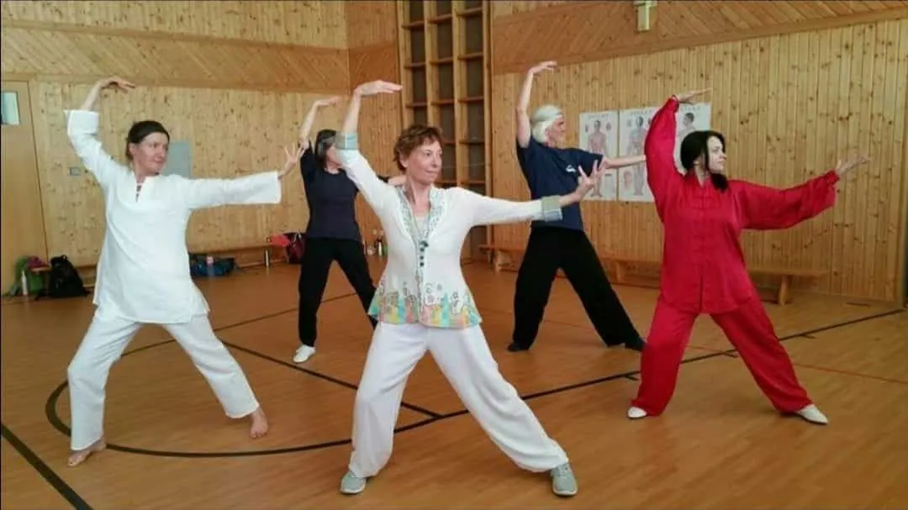
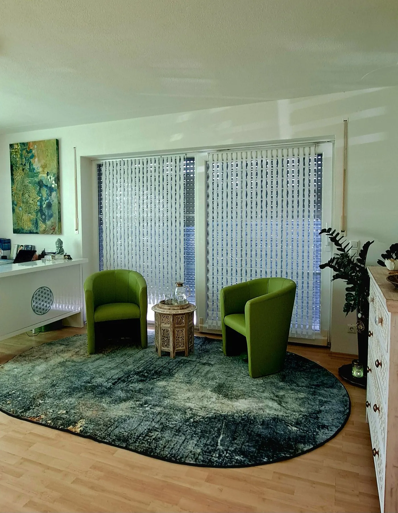
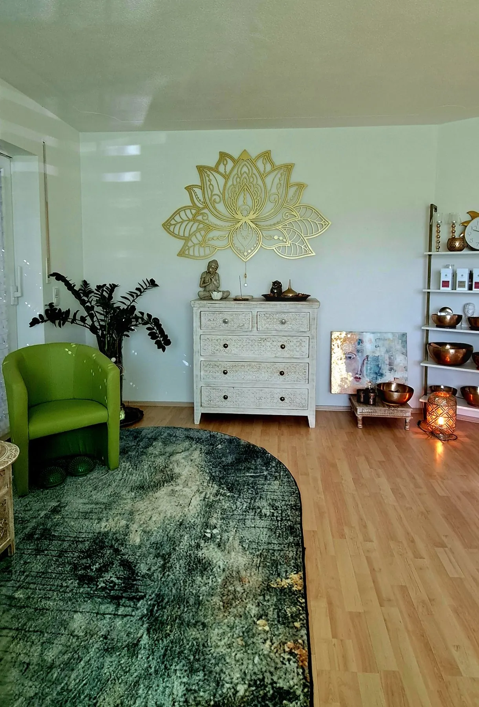
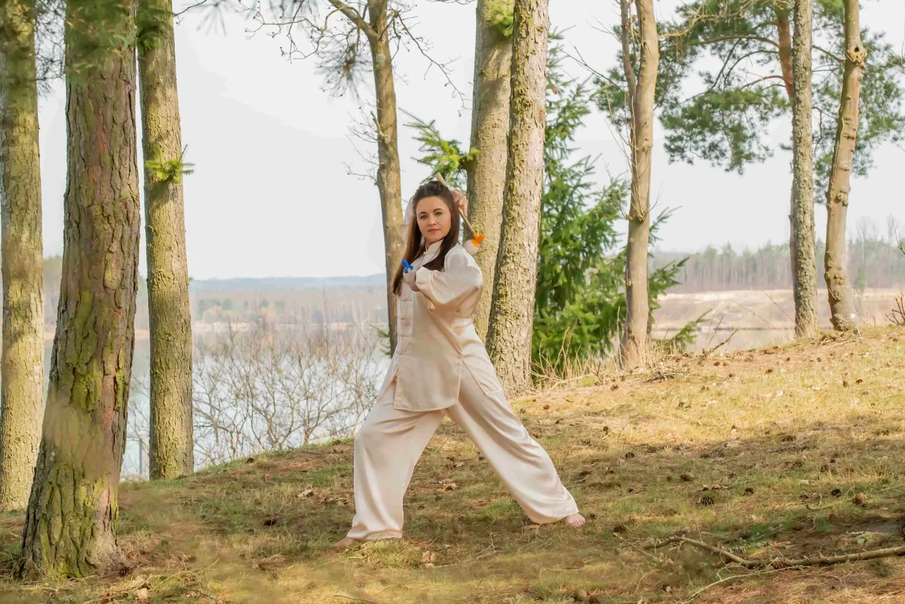

Mehr Lebensenergie.Qigong, Ernährung nach TCM und Körperarbeit in Steinberg am See bei Schwandorf.
Die Traditionelle Chinesische Medizin betrachtet den Menschen in seiner Ganzheit — mit seinen Bedürfnissen und Lebensumständen. Genau so arbeite ich: persönlich, mit Zeit für dich und deine Geschichte.

HauptangebotQigongKurse in Wackersdorf — plus Meridianklopfen zum Mitnehmen. HauptangebotErnährung nach TCMDie Fünf Elemente auf deinem Teller — alltagstauglich, ohne Dogma.KörperarbeitTuiNaTraditionelle chinesische Körperarbeit entlang der Meridiane.
HauptangebotErnährung nach TCMDie Fünf Elemente auf deinem Teller — alltagstauglich, ohne Dogma.KörperarbeitTuiNaTraditionelle chinesische Körperarbeit entlang der Meridiane. EnergiearbeitOrganetik.SLBekleidet, ohne Strom, in Ruhe.
EnergiearbeitOrganetik.SLBekleidet, ohne Strom, in Ruhe.Ich bin Inna —
Gesundheitspraktikerin und QiGong-Lehrerin aus Leidenschaft.
In meinen Räumen in Steinberg am See erwartet dich eine ganzheitliche Begleitung, die verschiedene Bereiche der Traditionellen Chinesischen Medizin verbindet: energetische und manuelle Körperarbeit, Lebenspflege und individuelle Ernährung nach den Prinzipien der TCM. Im Mittelpunkt steht immer der Mensch als Ganzes — mein Anliegen ist, dass du mehr Balance in deinen Alltag bringst, dein Wohlbefinden förderst und deine eigenen Ressourcen stärkst. Meine Schwerpunkte sind Stressregulation und Schlafgesundheit, Stoffwechsel, TCM-Frauengesundheit, Hormonelle Frauengesundheit und die Wechseljahre.
Grundlage ist ein ausführliches persönliches Gespräch. Ich nehme mir Zeit für dich, deine Bedürfnisse, deine Lebensgewohnheiten und das, was dich gerade beschäftigt. Darauf abgestimmt wählen wir gemeinsam passende Impulse aus Ernährung, Bewegung, Entspannung und Körperarbeit — mit meinem Wissen aus der TCM, langjähriger Erfahrung und einem achtsamen Blick auf dich. Ich freue mich darauf, dich kennenzulernen!
Mehr über michWer Qi zu führen weiß, nährt im Inneren seinen Körper — und wehrt nach außen hin ab, was ihm schadet.
Baopuzi, 4. Jahrhundert — der Satz, der über meiner Arbeit steht.
Drei Termine die Woche, Anfänger in jedem willkommen.
Laoshan-Qigong im Mehrgenerationenhaus Wackersdorf. Für jedes Alter und jede Lebenssituation, ohne Vorkenntnisse. Meridianklopfen lernst du im Kurs gleich mit.
Stundenplan
Einzelstunden auf Anfrage — auch in Steinberg am See.

Fünf Elemente. Fünf Geschmäcker. Ein Teller.
Holz, Feuer, Erde, Metall, Wasser — jedes Lebensmittel hat in der TCM einen Geschmack und eine Wirkung. Genuss und Bekömmlichkeit stehen dabei an erster Stelle.
Was hinter Mehr Lebensenergie steht.
Drei Sätze, die Inna begleiten.
„Wenn du die Absicht hast, dich zu erneuern, tu es jeden Tag.“
Konfuzius
„Ohne das Wissen um eine richtige Ernährung ist es kaum möglich, sich einer guten Gesundheit zu erfreuen.“
Sun Simiao, Tang-Dynastie
„Lernen ist wie Rudern gegen den Strom — sobald man aufhört, treibt man zurück.“
Laotse
Räume, in denen man ankommt.
Lotus an der Wand, Klangschalen im Regal, Zeit im Raum. Das sind Innas Räume in Steinberg am See.


Bald auch online: Programme für Frauen ab 40.
Inna arbeitet an Gesundheits- und Regulationspaketen, die du von zuhause aus durchgehst — mit einem Fragebogen vorab, damit das Programm zu deiner Lebensphase passt. Diese Website ist darauf vorbereitet: Kurse buchen, Pakete bestellen, alles an einem Ort.

Lass uns reden — in Ruhe.
Ein Anruf oder eine kurze Nachricht genügt. Inna meldet sich persönlich bei dir zurück, und ihr schaut gemeinsam, was zu dir passt.
Kurz sagen, worum es dir geht — Kurs, Ernährung oder eine Anwendung.
Ein persönliches Gespräch: Wo stehst du, was wünschst du dir?
Kurs, Termin oder Ernährungsgespräch — Schritt für Schritt, in deinem Tempo.
Oder direkt anrufen: 0151 42548212